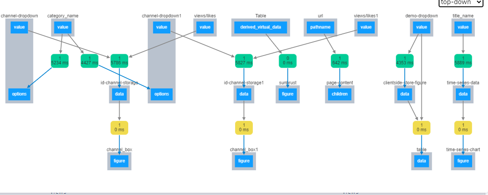

Project information
- Name : YouTube Dashboard
- Aim : To Finding good and Hidden Things About Youtube Channel By Dashboard..
- Concept : Interactive Dashboard working.
- Dataset : Kaggle
- Library : Pandas,Numpy,re
- Platform : Dash Plotly
- GitHub : Code
Motivation:
Why This Topic?- Often Time Users Confused How to Choose the Best Channel For My Learning Or Entertainment? So this Dashboard helps those users.
- How does This Dashboard help? Dashboard Can Compare Two different channel By their views and likes. (Box Plot)
- Sometimes Youtube Analyst needs To Track Some of the best youtube videos and channels by Longitudinal analysis So This Dashboard helps Our Analyst. (Timeline Chart)
- Which type of Contain (category e.g comedy,music) released in every day/month/year in proportion.? It's helpful for youtube analysts.(Sunbrust)
`
This is an Example of Interactive Dashboard
Here In this Dashboard, I am using a framework(python). It's an amazing experience working with the frontend and backend simultaneously. In this project, I build an interactive graph by using Plotly and updating the graph by using dash library.
-
Video:
-
- Filter Data by :-Data table
- Current date with videos category wise proportion by filter data :-Sunbrust
- Top 10 trending videos by date likes/views :-Bar Chart
- Channel wise descriptive statistics :-Table
- Most static likely :-Bar Plot
- Most static views :-Bar Plot
- Channel wise comparison distribution Views and like :-Boxplot
- Channel wise comparison distribution Views and like :-Boxplot
- longitudinal analysis of videos views:-Timeline Chart
-
Extra Concept:
Internal Structure Callback : How this internal callBack works while dropdown And graph changes?- Default Callback by Dash (Slower)
- ClientSide Callback by Javascript (Faster)
-
ClientSide Callback:
 -
Advantage:
- Dash Plotly Is Easy to learn and no needs too much Knowledge About Javascript.
- Dash Plotly run on python so we can use Computational Power of python In our dashboard.
- Machine learning engineers used dash plolty for visuliazing thier model Machine learning model and nowadays dash plolty became a competitor for Microsoft Bi and Tableau.
- Beginner Level Analyst can easliy implement a dashboard.
- Disadvantage: If we have 10,000+ row then chart loading and updating time increase.
Below functionality performed by this Dashboard.